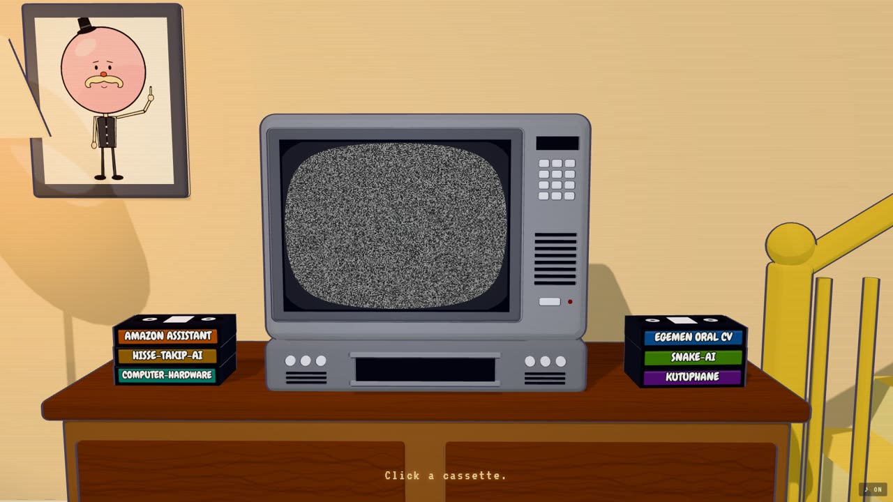
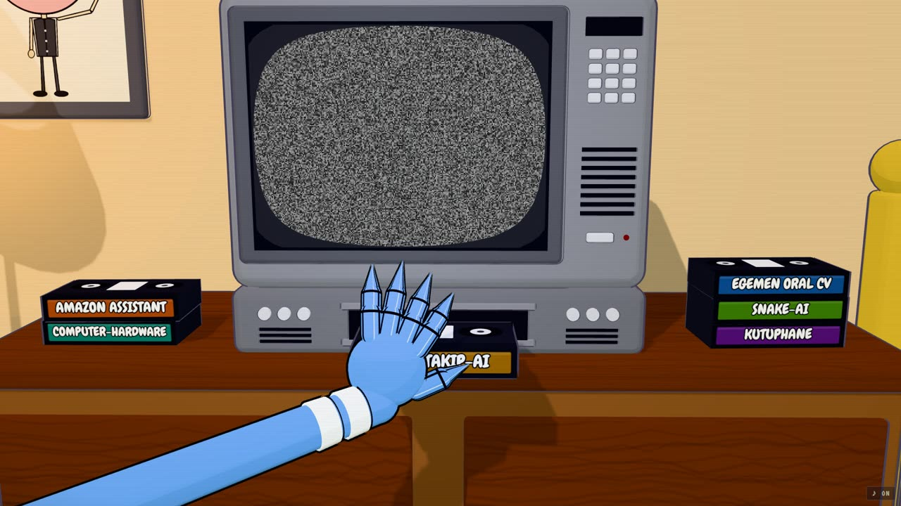
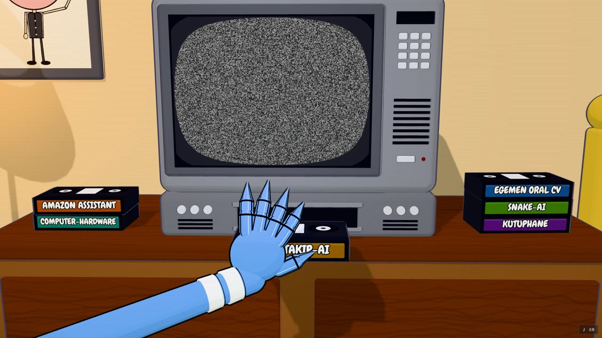

I gave an AI a 38-section spec. Then three sentences and a screenshot. Guess which one worked.
I recently built my portfolio as a cartoon living room from Regular Show: every VHS tape is one of my projects, and Mordecai's hand pushes the tape you pick into an old CRT. I built it with an AI coding assistant, and the most useful thing I learned wasn't about Three.js. It was about how I talk to the AI.

Attempt one: the mega-prompt
I did what I thought a "serious" developer should do. I wrote a giant specification: 38 numbered sections covering the folder structure, the names of every animation function, the exact states of the state machine, eight milestones, an asset manifest, a parallax layer table, and a list of things that were forbidden. Section one, in capital letters: NO 3D.
The AI followed it faithfully. Every section was ticked off: the architecture, the docs, the deployment workflow, the state machine, all of it. And the result was... fine. Technically correct, well organised, and completely flat. A placeholder room with a placeholder character walking around. Nothing about it made me want to click a tape.
Looking back, that wasn't the AI's fault. I had described the how in enormous detail and the feel almost not at all. And some of my rules were simply wrong. A few days later I was asking for exactly the thing I had banned in capital letters.
Attempt two: three sentences and a picture
Out of frustration, I changed my style completely. My next messages looked like this:
Here's a screenshot of the living room from the show. Make it look like this: these colours, this TV, Mordecai's hand. Keep my repos on the tapes. I'll leave the rest to you.
That was it. And the result jumped a level: a real 3D room with cel shading and ink outlines like the cartoon, the yellow staircase, Pops on the wall, a jointed arm that actually grips the tape and pushes it into the VCR. Things I would never have thought to put in a spec.

The long prompt
Described the implementation. Locked in guesses I made before seeing anything. The AI's effort went into satisfying a checklist.
The short prompts
Described the result and showed a reference. Left room for judgement. The effort went into making it look and feel right.
Why shorter worked better
- Long prompts freeze early guesses. I wrote my spec before I knew what I wanted. Every detailed rule was a decision made with the least information I would ever have.
- A checklist pulls attention away from quality. With 38 requirements, "done" means "every box ticked", not "this is great". Modern models are good at taste and craft; a huge spec leaves them little room to use it.
- References beat adjectives. "Dark, nostalgic, cinematic, cozy" means different things to different people. One screenshot of the show meant exactly one thing.
- Small, concrete feedback converges fast. The best part of the process was the back and forth: "the fingers need black lines like this" plus a quick sketch on top of a screenshot. Five of those got me further than the whole spec.
- Trust changes the output. "I'll leave it to you" sounds lazy, but it tells the model that the goal is a good result, not obedience.
Short isn't the same as vague
This isn't "prompts don't matter". The short prompts worked because they still contained the few things that really mattered: the goal, a reference, and the one hard constraint (keep my five repos on the tapes). What I dropped was everything I didn't actually care about, or couldn't know yet.

My new recipe
- One sentence of intent. What should someone feel or be able to do?
- A reference. A screenshot, a sketch, a link. Show, don't describe.
- Only the hard constraints. The handful of things that truly must not change.
- Hand over the rest. "You decide the details" is a feature, not a cop-out.
- Iterate with pictures. Short, specific feedback on what you see, not on what you imagined.
I'll still write long documents for things like APIs, where details really are the requirements. But for anything creative, I now start small, show more, and let the model surprise me. It usually does.